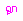
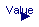

This library is just temporarily present. The components of this library will be present in the future in the Modelica standard library (with the new block connectors) and in the UserInteraction library that is currently under development.
| Name | Description |
|---|---|
| SetRealParameter | Define Real parameter (GUI not yet satisfactory) |
| Returns true, if at least on element of the Boolean input vector is true | |
| Returns true, if all elements of the Boolean input vector are true | |
| Button that sets its output to true when pressed and is reset when an element of 'reset' becomes true | |
| Show value of Real input signal dynamically | |
| Dynamically show Boolean input signal (false/true = white/green color) |
type SetRealParameter = Real "Define Real parameter (GUI not yet satisfactory)";
 Modelica.StateGraph.Temporary.anyTrue
Modelica.StateGraph.Temporary.anyTrue
| Type | Name | Default | Description |
|---|---|---|---|
| Boolean | b[:] |
| Type | Name | Description |
|---|---|---|
| Boolean | result |
function anyTrue
"Returns true, if at least on element of the Boolean input vector is true"
extends Modelica.Icons.Function;
input Boolean b[:];
output Boolean result;
algorithm
result := false;
for i in 1:size(b,1) loop
result := result or b[i];
end for;
end anyTrue;
Modelica.StateGraph.Temporary.allTrue
| Type | Name | Default | Description |
|---|---|---|---|
| Boolean | b[:] |
| Type | Name | Description |
|---|---|---|
| Boolean | result |
function allTrue
"Returns true, if all elements of the Boolean input vector are true"
extends Modelica.Icons.Function;
input Boolean b[:];
output Boolean result;
algorithm
result := true;
for i in 1:size(b,1) loop
result := result and b[i];
end for;
end allTrue;
 Modelica.StateGraph.Temporary.RadioButton
Modelica.StateGraph.Temporary.RadioButton
| Type | Name | Default | Description |
|---|---|---|---|
| Time | buttonTimeTable[:] | {0} | Time instants where button is pressend and released [s] |
| Time varying expressions | |||
| Boolean | reset[:] | {false} | Reset button to false, if an element of reset becomes true |
| Type | Name | Description |
|---|---|---|
| output BooleanOutput | on |
block RadioButton
"Button that sets its output to true when pressed and is reset when an element of 'reset' becomes true"
parameter Modelica.SIunits.Time buttonTimeTable[:]={0}
"Time instants where button is pressend and released";
input Boolean reset[:]={false}
"Reset button to false, if an element of reset becomes true";
Modelica.Blocks.Interfaces.BooleanOutput on;
protected
Modelica.Blocks.Sources.BooleanTable table(table=buttonTimeTable);
algorithm
on := table.y;
when pre(reset) then
on := false;
end when;
end RadioButton;

| Type | Name | Default | Description |
|---|---|---|---|
| Integer | precision | 3 | Number of significant digits to be shown |
| Boolean | hideConnector | false | = true, if connector is not shown in the dynamic object diagram |
| RealInput | Value | Real value to be shown in icon |
| Type | Name | Description |
|---|---|---|
| input RealInput | Value | Real value to be shown in icon |
model NumericValue "Show value of Real input signal dynamically"
parameter Integer precision(min=0) = 3
"Number of significant digits to be shown";
parameter Boolean hideConnector=false
"= true, if connector is not shown in the dynamic object diagram";
Modelica.Blocks.Interfaces.RealInput Value "Real value to be shown in icon";
end NumericValue;

| Type | Name | Description |
|---|---|---|
| input BooleanInput | u |
model IndicatorLamp "Dynamically show Boolean input signal (false/true = white/green color)" Modelica.Blocks.Interfaces.BooleanInput u; end IndicatorLamp;